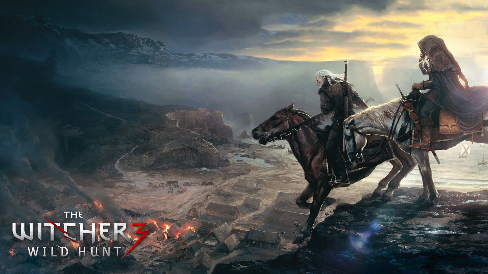

THE WITCHER 3: WILD HUNT
The Witcher: Wild Hunt is a story-driven, next-generation open world role-playing game set in a visually stunning fantasy universe full of meaningful choices and impactful consequences. In The Witcher you play as the professional monster hunter, Geralt of Rivia, tasked with finding a child of prophecy in a vast open world rich with merchant cities, viking pirate islands, dangerous mountain passes, and forgotten caverns to explore.
PLAY AS A HIGHLY TRAINED MONSTER SLAYER FOR HIRE
Trained from early childhood and mutated to gain superhuman skills, strength and reflexes, witchers are a distrusted counterbalance to the monster-infested world in which they live.
- Gruesomely destroy foes as a professional monster hunter armed with a range of upgradeable weapons, mutating potions and combat magic.
- Hunt down a wide range of exotic monsters from savage beasts prowling the mountain passes to cunning supernatural predators lurking in the shadows of densely populated towns.
- Invest your rewards to upgrade your weaponry and buy custom armour, or spend them away in horse races, card games, fist fighting, and other pleasures the night brings.
EXPLORE A MORALLY INDIFFERENT FANTASY OPEN WORLD
Built for endless adventure, the massive open world of The Witcher sets new standards in terms of size, depth and complexity.
- Traverse a fantastical open world: explore forgotten ruins, caves and shipwrecks, trade with merchants and dwarven smiths in cities, and hunt across the open plains, mountains and seas.
- Deal with treasonous generals, devious witches and corrupt royalty to provide dark and dangerous services.
- Make choices that go beyond good & evil, and face their far-reaching consequences.

CHASE DOWN THE CHILD OF PROPHECY
Take on the most important contract to track down the child of prophecy, a key to save or destroy this world.
- In times of war, chase down the child of prophecy, a living weapon of power, foretold by ancient elven legends.
- Struggle against ferocious rulers, spirits of the wilds and even a threat from beyond the veil – all hell-bent on controlling this world.
- Define your destiny in a world that may not be worth saving.
SYSTEM REQUIREMENTS
|
OS |
Processor |
Memory |
Graphics |
Storage |
| MINIMUM |
64-bit Windows 7, 64-bit Windows 8 (8.1) or 64-bit Windows 10 |
Intel CPU Core i5-2500K 3.3GHz / AMD CPU Phenom II X4 940 |
6 GB RAM |
Nvidia GPU GeForce GTX 660 / AMD GPU Radeon HD 7870 |
35 GB available space |
| MAXIMUM |
64-bit Windows 7, 64-bit Windows 8 (8.1) or 64-bit Windows 10 |
Intel CPU Core i7 3770 3.4 GHz / AMD CPU AMD FX-8350 4 GHz |
8 GB RAM |
Nvidia GPU GeForce GTX 770 / AMD GPU Radeon R9 290 |
35 GB available space |
We are also organizing a lottery for our followers. 10 people will have the Witcher 3 Wild Hunt game as result of lottery. The lottery will be on 26 October 2018. Fill in the form and don't miss the game..